ORTHOPAEDIC TRAUMA DIGEST
创伤骨科文献速览
第 001 期 · 2026-09-14
近一周（9月7–14日）10 本创伤骨科核心期刊新收录 90 篇 · 本期精选 16 篇
按部位分类：骨盆与髋部 7 · 关节周围与四肢 6 · 创伤综合与并发症 3 ｜ 含 1 篇系统综述 · 1 篇指南更新 · 1 篇中国团队机器人研究
编者按 EDITOR'S NOTE
这是创伤骨科文献速览的第一期。检索窗口为近一周（9 月 7–14 日），10 本创伤骨科核心期刊共检出 90 篇，精选 16 篇。栏目按部位分三块：骨盆与髋部、关节周围与四肢骨折、创伤综合与并发症。
本期最值得关注的一条来自我们自己的团队——北京积水潭医院创伤骨科与北航、罗森博特合作，比较了机器人辅助骨折复位（RAFR）与徒手闭合复位+导航固定治疗 III/IV 型骨盆脆性骨折。115 例、随访 1 年，RAFR 组获得更优 Matta 复位等级（校正 OR 0.139）和更高的 Parker 活动评分，手术组 1 年死亡率 8.6% vs 非手术组 21.1%（差异未达统计学显著）。这是国内机器人骨盆复位少见的高质量队列数据。
第二条是本期的一个「反直觉」发现：骨盆环骨折的长期生活质量研究显示，复位质量差（>10 mm）是唯一可干预的独立预后因素（β=-0.22，p<0.001），而内固定方式、AO/OTA 分型本身都不独立影响结局。也就是说，怎么固定可能不如「复得准不准」重要。此外，老年骨盆损伤的瑞典全国队列（11,624 例）证实骨盆损伤是 30 天死亡的独立危险因素（校正 OR 1.28）——提示对老年骨盆骨折不宜低估其严重程度。
▍骨盆与髋部 · 7 篇
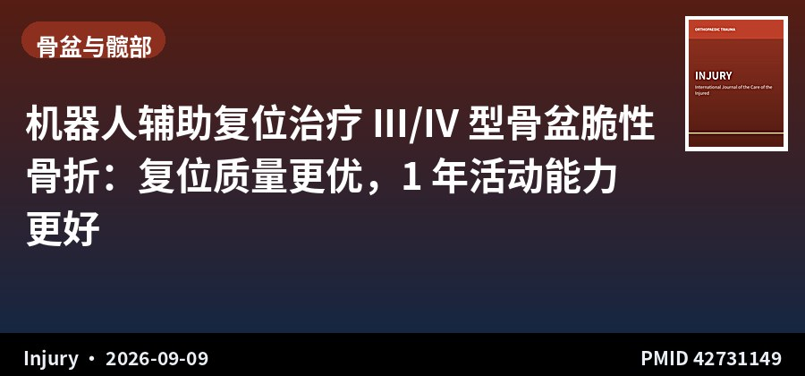
回顾性队列 · III级证据 · 115例
机器人辅助复位治疗 III/IV 型骨盆脆性骨折：复位质量更优，1 年活动能力更好
Robot-assisted fracture reduction and treatment outcomes in type III and IV fragility fractures of the pelvis: A retrospective cohort study
Injury · 2026-09-09 · 北京积水潭医院创伤骨科（中国） · PMID 42731149
一句话结论：115 例 ≥60 岁 III/IV 型骨盆脆性骨折，机器人辅助复位（RAFR）相比徒手闭合复位+导航固定，术后 Matta 复位等级更优（校正 OR 0.139，95%CI 0.039–0.440，P=0.001），1 年 Parker 活动评分更高（β=2.030，P<0.001）。
要点：2021–2025 年单中心队列：RAFR 39 例、徒手复位+导航固定 34 例、初始非手术 42 例。手术组 1 年死亡率 8.6%，非手术组 21.1%（P=0.078），总体生存差异无统计学意义（P=0.536）。Barthel 指数、EQ-5D-5L、NRS 疼痛校正后差异无统计学意义。机器人由北京罗森博特提供技术支持。
对临床的启示：这是国内机器人骨盆复位少见的、带 1 年随访的队列数据，适合在科室层面讨论机器人辅助复位的适应证。注意这是回顾性设计、三组非随机，且初始非手术组本身病情更重（选择偏倚），因此「手术优于非手术」的结论需谨慎解读；但「机器人复位优于徒手复位」这一比较在两组手术患者间相对可比，证据强度更好。
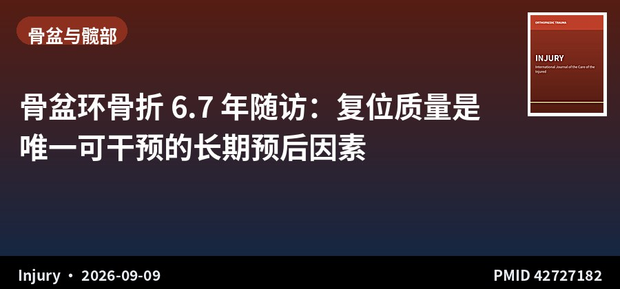
回顾性队列 · III级证据 · 98例 · 随访6.7年
骨盆环骨折 6.7 年随访：复位质量是唯一可干预的长期预后因素
Predictors of long-term quality of life following operative treatment of unstable pelvic ring injuries: A retrospective cohort study
Injury · 2026-09-09 · Ganga Medical Centre（印度） · PMID 42727182
一句话结论：98 例不稳定骨盆环骨折术后平均随访 6.7 年，平均 EQ-5D 指数 0.87；多因素分析中，复位不良（>10 mm，β=-0.22，95%CI -0.29~-0.15，p<0.001）与多发伤（β=-0.05，p=0.044）独立预测生活质量更差。
要点：纳入 2014–2018 年 AO/OTA 61B/61C 型骨折，随访≥5 年。单因素分析中，复位不良、多发伤、合并伤、术后并发症与 EQ-5D 降低相关，联合固定与后路固定与更高评分相关；但进入多因素模型后，固定方式与 AO/OTA 分型均不再独立相关。74% 为男性，平均年龄 41 岁。
对临床的启示：这条结论有很强的操作指向性：在内固定方式上反复争论（前路 vs 后路、单柱 vs 双柱）的临床价值，可能不如把精力放在「解剖复位」上。复位质量是本研究里唯一可被术者主动改善的独立因素。反过来，固定方式选择应更多基于骨质量、软组织条件和术者熟悉度，而非指望它能改善长期生活质量。
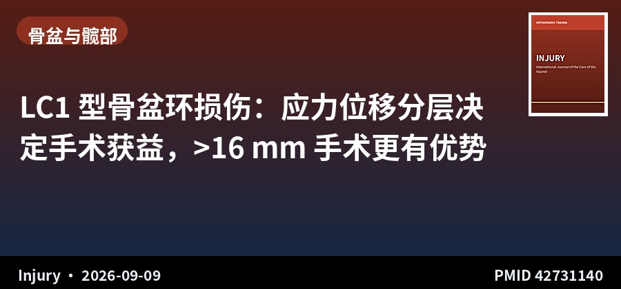
多中心回顾 · III级证据 · 187例
LC1 型骨盆环损伤：应力位移分层决定手术获益，>16 mm 手术更有优势
Stress displacement and surgical benefit in Beckmann 7-9 pelvic ring injuries: A retrospective multicenter analysis
Injury · 2026-09-09 · 美国 8 家一级创伤中心 · PMID 42731140
一句话结论：187 例 Beckmann 7–9 分、稳定性存疑的 LC1 骨盆环损伤中，应力位位移幅度可识别能从手术获益的人群；按 <12 mm、12–16 mm、>16 mm 分层后，手术组早期不良事件与活动能力下降的复合结局更优。
要点：8 家一级创伤中心回顾性队列，纳入 OTA/AO 61B2 型骨折、Beckmann 评分 7–9 且完成应力位检查者。主要复合结局为全因死亡、非计划内固定失败或翻修、活动能力等级恶化。随访时长作为协变量而非入组限制。
对临床的启示：LC1 一直是最让创伤医生纠结的类型——「稳定还是不稳定」直接决定治不治。这项研究给出了一个可操作的量化分层：应力位位移量是判断手术必要性的关键依据。临床遇到 Beckmann 7–9 分的灰区患者，务必常规做应力位检查，并把位移量作为决策和术前谈话依据。多中心大样本是优势，但回顾性设计仍存在指征混杂。
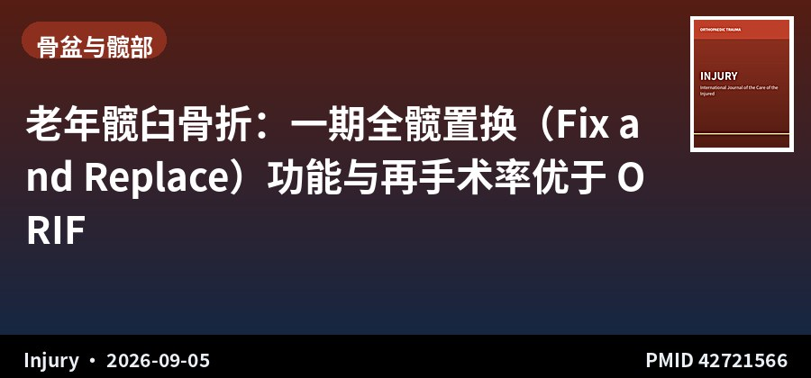
系统综述+Meta · I级证据 · 2703例
老年髋臼骨折：一期全髋置换（Fix and Replace）功能与再手术率优于 ORIF
Comparison of outcomes based on treatment type for geriatric acetabular fractures: A systematic review and meta-analysis
Injury · 2026-09-05 · 苏黎世大学医院等（瑞士/美国/德国） · PMID 42721566
一句话结论：20 项研究、2703 例 ≥55 岁髋臼骨折患者，一期 THA/联合髋置换（CHP）组的功能评分与再手术/转换率优于 ORIF，成为「Fix and Replace」策略的重要循证支持。
要点：检索 PubMed、Embase、Cochrane、Web of Science（1997–2025），比较 ORIF（n=2034）与关节置换（CHP/THA，n=417）。平均年龄 74.1 岁，平均 ASA 2.8。主要结局为功能评分（Harris/牛津髋评分）、90 天与 1 年死亡率、再手术/转换率，采用随机效应模型合并。
对临床的启示：对骨质量差、已有骨关节炎的老年髋臼骨折，这份 Meta 支持更积极地考虑一期关节置换，而非坚持先 ORIF、失败再转换。对高龄患者而言，「一次手术解决问题」在功能与再手术率上都有优势。但需注意两组患者基线可能存在选择偏倚（ORIF 组损伤往往更轻），且置换组并发症谱不同，术前评估仍应个体化。
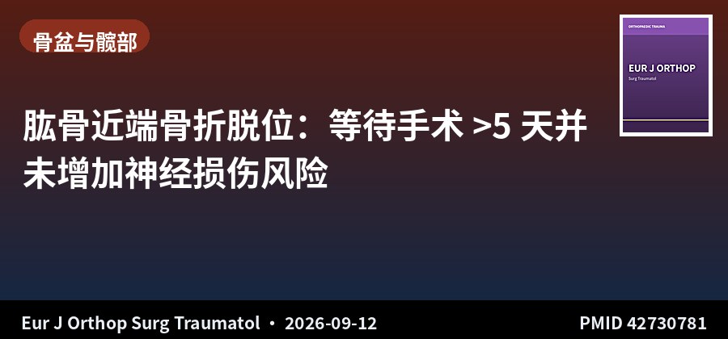
回顾性综述 · IV级证据 · 52例
肱骨近端骨折脱位：等待手术 >5 天并未增加神经损伤风险
Impact of operative timing for proximal humerus fracture dislocations on development of neurologic injury
Eur J Orthop Surg Traumatol · 2026-09-12 · 爱荷华大学（美国） · PMID 42730781
一句话结论：52 例肱骨近端骨折脱位中，≤5 天手术与 >5 天手术两组在术前神经功能变化（0% vs 5.0%，p=0.38）和末次随访残余神经缺损（9.4% vs 5.0%，p=1.0）上均无差异。
要点：一级创伤中心回顾性研究，14% 患者就诊时即有神经缺损，仅 1.9% 在术前等待期出现神经状态变化。61.5% 在 5 天内手术，38.5% 超过 5 天。最常见做法是等待肩关节专科医生到位后再手术。
对临床的启示：这条结论能缓解一个常见焦虑：为了等专科医生而推迟几天手术，在本队列中并未带来额外神经风险。对需要转诊或协调专科资源的病例，可以在术前谈话中说明这一数据。但研究仅 52 例、仅 1 例出现术前神经变化，统计效能极低（作者自己承认），不能据此认为延迟绝对安全，仍需密切监测神经状态。
原文：doi.org/10.1007/s00590-026-04956-y
📷 原文图片（共 1 张 · 左右滑动查看）
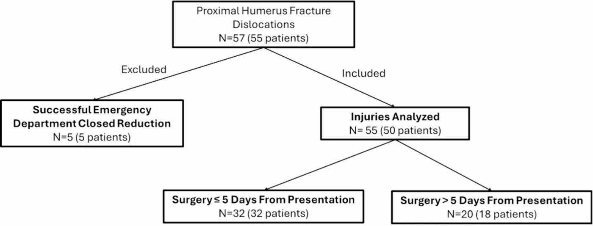
图片来源：原文开放全文（PubMed Central），版权归原出版方
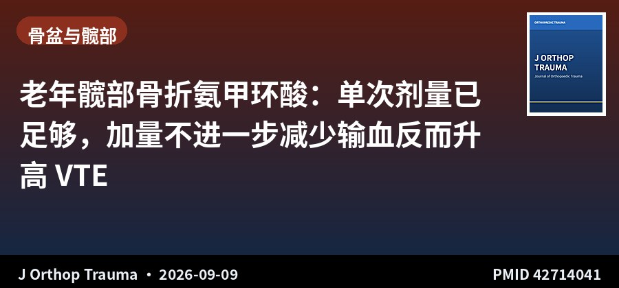
回顾性队列 · III级证据 · 1691例
老年髋部骨折氨甲环酸：单次剂量已足够，加量不进一步减少输血反而升高 VTE
The Influence of Multiple Doses of Intravenous Tranexamic Acid on Transfusions and Complications in the Treatment of Fragility Hip Fractures
J Orthop Trauma · 2026-09-09 · Hartford HealthCare（美国） · PMID 42714041
一句话结论：1691 例脆性髋部骨折中，TXA 显著降低输血率（无 TXA 31.8% vs 单次 15.9% vs 多次 14.2%，p<0.001）；但 2、3、4 次剂量较单次并无额外获益（p=0.791），且单次剂量组 VTE 发生率最低（0.9% vs 2.7% vs 2.7%，p=0.040）。
要点：2018–2024 年单中心队列，均为 ≥50 岁股骨颈（OTA31B）、转子间（OTA31A1/A2）或转子下（OTA31A3）骨折。无 TXA 632 例、单次 551 例、多次 508 例，三组手术时间无差异（p=0.073）。1 年死亡率三组无差异（9.3% vs 7.3% vs 8.5%，p=0.433）。
对临床的启示：可直接写进科室规范的一条：老年髋部骨折围手术期用氨甲环酸，单次静脉给药就够了，没有必要追加剂量——不仅没有额外减少输血，单次组的 VTE 风险反而是最低的。这对简化流程、降低成本也有意义。注意为回顾性设计，TXA 给药方案基于院内既定规范而非随机分配。
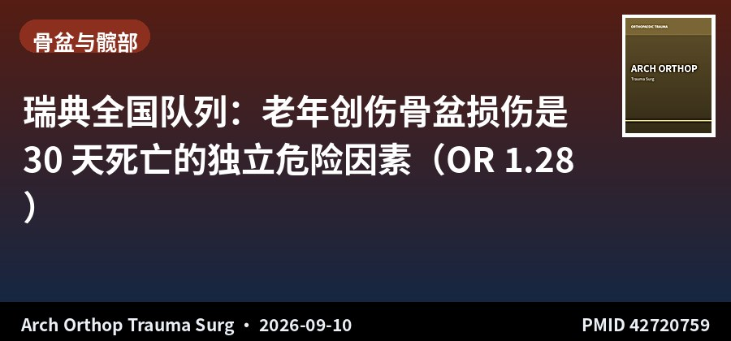
全国注册队列 · III级证据 · 11624例
瑞典全国队列：老年创伤骨盆损伤是 30 天死亡的独立危险因素（OR 1.28）
Pelvic injuries in elderly trauma patients: epidemiology, injury characteristics, in-hospital care and factors influencing mortality
Arch Orthop Trauma Surg · 2026-09-10 · 卡罗林斯卡大学医院（瑞典） · PMID 42720759
一句话结论：11,624 例 ≥60 岁创伤患者中，6.7% 存在骨盆损伤；校正性别、ASA 分级、NISS 与颅脑损伤后，骨盆损伤仍独立关联 30 天死亡（校正 OR 1.28，95%CI 1.03–1.57，p=0.025）。
要点：基于瑞典创伤登记库（SweTrau）2022–2024 年数据。骨盆损伤组更多为高能量损伤，中位 NISS 17 vs 11，住院 6 vs 3 天，ICU 入住率 30.9% vs 20.0%，出院直接回家比例更低（34.0% vs 55.8%，均 p<0.001）。粗死亡率 16.1% vs 12.5%（p=0.002）。
对临床的启示：这项研究回答了一个长期争议：骨盆损伤到底是「独立致死」还是「只是伴随重伤的标记」。答案是前者——校正伤情严重度后仍独立相关。对 ≥60 岁的骨盆损伤患者，应收治到具备多学科能力的中心、按高危人群管理，而不应因骨折形态看似「简单」就低估风险。全国注册库数据样本量大、代表性强，但为回顾性分析，残余混杂难以完全排除。
▍关节周围与四肢骨折 · 6 篇
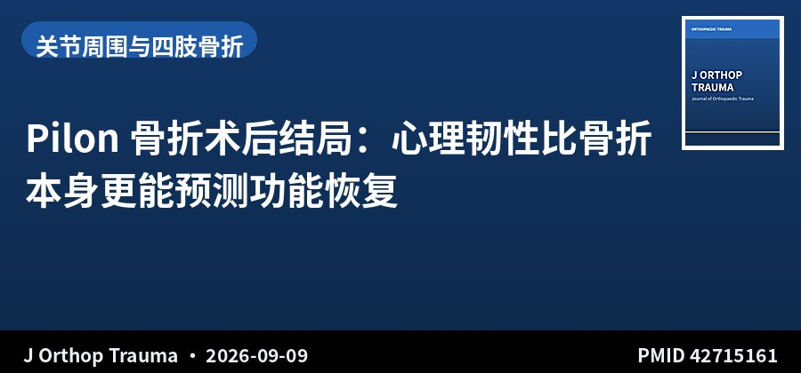
回顾性队列 · III级证据 · 105例
Pilon 骨折术后结局：心理韧性比骨折本身更能预测功能恢复
Association of Resilience with Clinical and Patient-Reported Outcomes Following Operative Fixation of Pilon Fractures
J Orthop Trauma · 2026-09-09 · 阿拉巴马大学伯明翰分校（美国） · PMID 42715161
一句话结论：105 例 Pilon 骨折术后患者中，高韧性组（BRS≥3.67）在 6 周–2 年的整体心理健康、抑郁、焦虑评分上均优于低韧性组，且 6 个月时正常功能恢复比例更高（51.7% vs 40.5%，p=0.040）。
要点：单中心 2022–2026 年队列，按 6 个月 Brief Resilience Scale 中位数分层（低 48 例、高 57 例）。高韧性组在 3 个月、6 个月的整体身体健康、躯体功能评分更高、疼痛干扰更低（均 p≤0.045）。两组年龄、BMI、性别、种族相似，但低韧性组基线 ISS 更高（15.8 vs 9.8，p<0.001）。
对临床的启示：Pilon 骨折功能恢复差异极大，这条研究提示心理因素是可干预的一环。对术前 BRS 偏低（可简短筛查）的患者，术后早期心理支持、康复目标设定和教育可能比单纯强调影像学愈合更有价值。要注意低韧性组基线 ISS 更高，存在伤情混杂的可能，不能完全归因于心理因素。
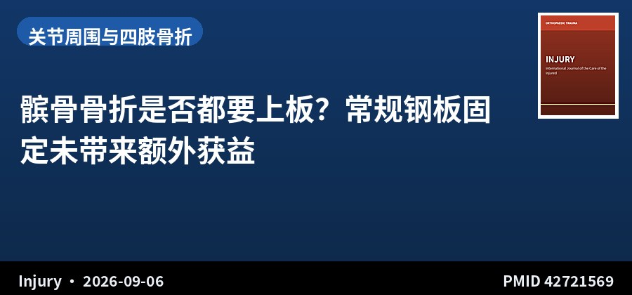
回顾性队列 · III级证据 · 125例
髌骨骨折是否都要上板？常规钢板固定未带来额外获益
Patellar fractures: To plate them all? Results of a new treatment protocol
Injury · 2026-09-06 · Shaare Zedek 医学中心（以色列） · PMID 42721569
一句话结论：125 例髌骨骨折中，70% 为 AO C1–C2 粉碎型，钢板组与非钢板组主要并发症（内固定失败/深部感染）无显著差异；研究不支持对所有髌骨骨折常规使用解剖锁定钢板。
要点：一级创伤中心 2016–2023 年回顾性队列，比较 48 例钢板固定与 77 例非钢板固定的并发症与费用。主要并发症定义为内固定失败或深部感染；次要并发症包括浅表感染、ROM<110°、持续膝痛、上下楼困难；内固定取出单独分析。
对临床的启示：近年内固定厂商力推髌骨解剖钢板，这项来自「全院常规上板」实践后的回顾研究给出冷静的答案：在非复杂类型中，钢板并未显示出优势，反而可能带来更高费用。对简单横形、无严重粉碎的髌骨骨折，传统张力带或螺钉固定仍是合理选择；钢板的价值可能更多体现在严重粉碎病例。回顾性设计，存在术式选择偏倚。
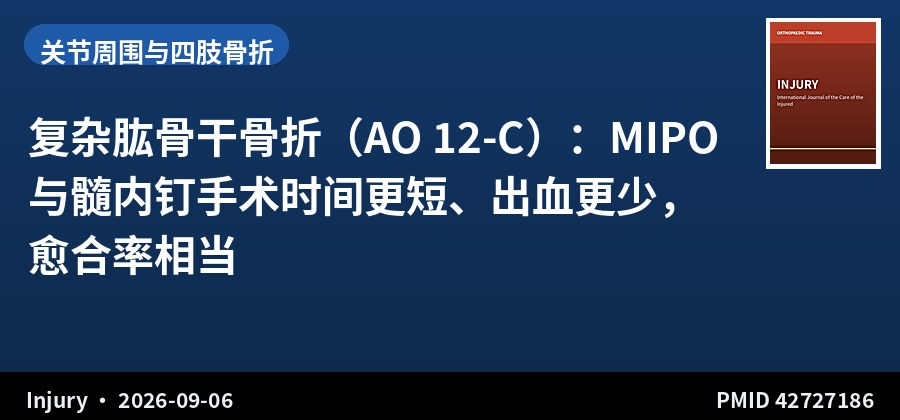
多中心对照 · III级证据 · 75例
复杂肱骨干骨折（AO 12-C）：MIPO 与髓内钉手术时间更短、出血更少，愈合率相当
Surgical management of complex humeral shaft fractures (AO/OTA 12-C): A multicenter comparison of open plating, MIPO, and intramedullary nailing
Injury · 2026-09-06 · 韩国 5 家大学医院 · PMID 42727186
一句话结论：75 例 AO/OTA 12-C 型肱骨干骨折中，ORIF 手术时间（143.0 vs 102.1 vs 95.5 min）与术中出血（292.0 vs 196.2 vs 182.3 mL）显著高于 MIPO 与髓内钉（均 P<0.001），三组骨愈合率无显著差异（92.3% vs 93.3% vs 84.2%，P=0.53）。
要点：2015–2023 年多中心回顾性比较：ORIF 26 例、MIPO 30 例、髓内钉 19 例。术后桡神经麻痹共 5 例（ORIF 3、MIPO 1、髓内钉 1），除 1 例外均恢复。髓内钉组多发伤比例与中位 ISS 数值上更高。功能评估采用 DASH、MEPS 与关节活动度。
对临床的启示：对严重粉碎的 12-C 型肱骨干骨折，MIPO 和髓内钉在微创性上明显占优（手术时间缩短约 40 分钟、出血减少约 100 mL），而愈合率并不逊色。ORIF 的价值更多在于需要直视下解剖复位、合并血管神经损伤探查的情况。桡神经麻痹三组均可发生，术中保护与术前告知是共同要点。回顾性、每组样本量偏小。
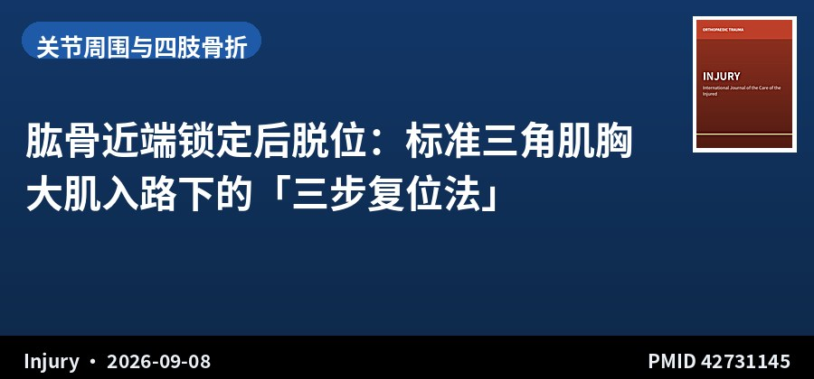
病例系列 · IV级证据 · 中国团队
肱骨近端锁定后脱位：标准三角肌胸大肌入路下的「三步复位法」
A structured three-step reduction strategy for locked posterior fracture-dislocation of the proximal humerus through a standard deltopectoral approach: A retrospective case series
Injury · 2026-09-08 · 中部战区总医院（中国） · PMID 42731145
一句话结论：提出经标准三角肌胸大肌入路、单纯前路完成肱骨头后脱位复位的三步结构化策略，为这一罕见且技术困难的损伤提供可复制的操作路径。
要点：肱骨近端锁定后脱位指肱骨头嵌顿于肩盂后方，复位困难、易漏诊。以往文献多描述技巧但缺乏标准化步骤，该研究将前路复位流程结构化为三个递进步骤，并回顾性评估其可行性与结果。
对临床的启示：对肩关节创伤经验不多的术者，这类「结构化步骤」比零散技巧提示更容易落地。遇到老年患者肩部外伤后活动明显受限、正位片似无异常时，要有后脱位的警觉——漏诊代价很大。病例系列证据等级有限，术前应常规 CT 评估肱骨头缺损范围，缺损过大者需考虑置换。
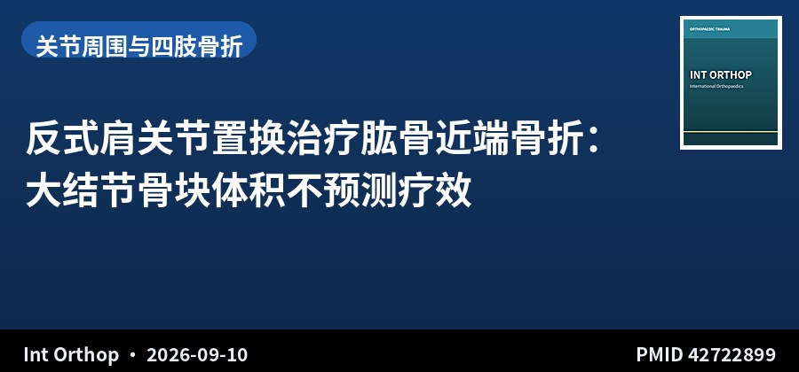
回顾性队列 · III级证据 · 153例
反式肩关节置换治疗肱骨近端骨折：大结节骨块体积不预测疗效
Greater tuberosity fragment volume does not predict clinical outcomes or tuberosity healing after reverse shoulder arthroplasty for proximal humerus fractures: a retrospective cohort study
Int Orthop · 2026-09-10 · 特拉维夫 Sourasky 医学中心（以色列） · PMID 42722899
一句话结论：153 例肱骨近端骨折行反式肩关节置换患者，术前 CT 测量的大结节骨块体积与任何临床结局（前屈、外展、旋转、VAS、QuickDASH、SSV）均无显著相关（均 p≥0.15），与影像学大结节愈合亦无关。
要点：大结节体积与影像学最大结节长度（r=0.54）、CT 测量长度（r=0.52）、肩盂面积（r=0.35）及男性别（r=0.32）相关，但与功能结局无关；在 91 例确认愈合的患者中依然如此。
对临床的启示：临床上常认为「大结节骨块越大，越应该尝试固定或越有利于置换后功能」，这项研究否定了这一直觉。对反式肩关节置换而言，术前不必单纯依据大结节体积来判断预后或选择术式，更应关注结节位置、骨质量与患者整体状况。大结节愈合本身仍是重要目标，但「体积」不是有效的替代指标。
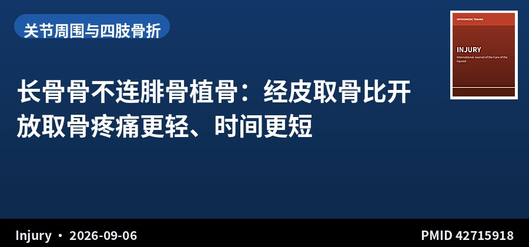
回顾性对照 · III级证据 · 34例
长骨骨不连腓骨植骨：经皮取骨比开放取骨疼痛更轻、时间更短
Open versus percutaneous fibular graft harvesting in long bone nonunion surgery: A comparative cohort study
Injury · 2026-09-06 · 皇家医疗服务局（约旦） · PMID 42715918
一句话结论：34 例长骨骨不连行非血管化腓骨植骨，经皮取骨组术后 1 周（VAS 7.39 vs 8.19）、1 个月（4.56 vs 6.13）疼痛评分显著低于开放组（p<0.0001），取骨时间更短、出血更少、切口更小。
要点：16 例开放取骨、18 例经皮取骨，两组基线人口学与手术特征基本相似。评估指标包括取骨时间、估计出血量、切口长度、术后疼痛评分、镇痛需求、供区并发症与功能恢复。
对临床的启示：腓骨植骨是骨不连治疗的常用手段，供区并发症一直是短板。经皮技术在不增加技术复杂度的前提下明显减轻早期疼痛、缩短手术时间，值得在骨不连手术中推广。样本量较小（34 例）且为回顾性比较，长期骨愈合率与供区神经损伤情况仍需更大样本验证。
▍创伤综合与并发症 · 3 篇
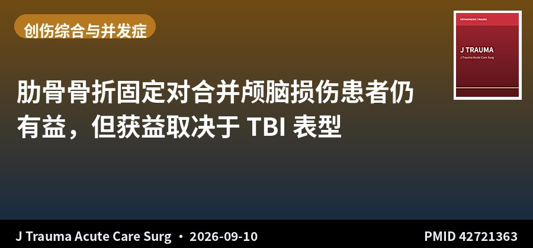
TQIP 数据库研究 · III级证据 · 73965例
肋骨骨折固定对合并颅脑损伤患者仍有益，但获益取决于 TBI 表型
Rib fixation still helps: Surgical stabilization of rib fractures in traumatic brain injury, a TQIP Study
J Trauma Acute Care Surg · 2026-09-10 · Westchester 医学中心（美国） · PMID 42721363
一句话结论：73,965 例胸部+颅脑损伤患者中，肋骨固定（SSRF）与灶性 TBI（OR 0.262）及弥漫性 TBI（表型特异 OR 0.058）住院死亡率降低相关，TBI 表型显著修饰这一关联（交互 p=0.011）。
要点：TQIP 2017–2023 数据，纳入年龄≥18 岁、头部与胸部 AIS≥3 且有≥3 根肋骨骨折者。总体 3.3% 接受 SSRF，12.8% 死亡。SSRF 与肺部并发症（OR 1.23，p=0.073）和呼吸机天数无显著关联，但与气管切开率升高相关（OR 2.50，p<0.001）。
对临床的启示：合并 TBI 的患者要不要做肋骨固定，一直是争议点。这项大数据库研究提示：不应因合并 TBI 就一律放弃 SSRF，灶性和弥漫性 TBI 患者反而可能获益最大。同时要留意气管切开率升高这一信号（可能反映更长的呼吸支持需求）。数据库研究存在指征混杂，且 TBI 表型基于 ICD 编码，解读时需谨慎，不宜直接改变临床路径。
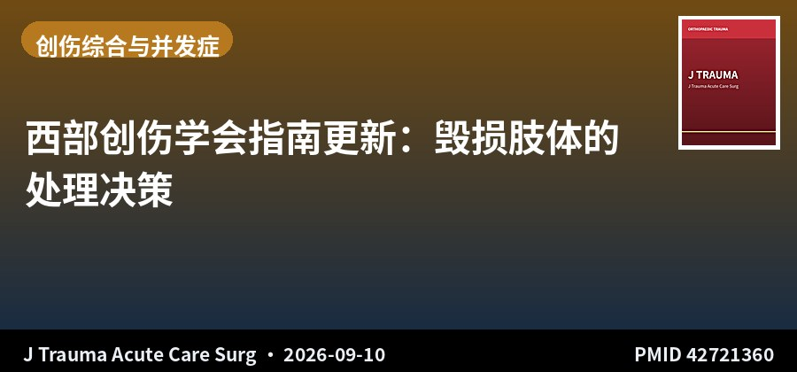
学会指南更新 · Western Trauma Association
西部创伤学会指南更新：毁损肢体的处理决策
Western Trauma Association critical decisions in trauma: Update on the management of the mangled extremity
J Trauma Acute Care Surg · 2026-09-10 · 美国西部创伤学会（多中心） · PMID 42721360
一句话结论：西部创伤学会发布毁损肢体处理的关键决策更新，围绕保肢与截肢的决策框架、血管损伤处理、临时固定与分期重建给出推荐。
要点：毁损肢体的处理涉及骨科、血管外科、整形外科与重症医学的多学科协作。指南针对血运重建时机、评分系统在决策中的作用、感染防控与分期重建策略进行了更新，强调不应单一依赖评分系统决定保肢或截肢。
对临床的启示：建议科室把这份更新纳入创伤救治流程与病例讨论参考。核心信息是：保肢/截肢决策是综合判断，需结合损伤评分、软组织条件、缺血时间、患者意愿与中心能力，而非套用单一评分。对基层或非专科中心，早期识别与快速转诊比在本地勉强保肢更关键。
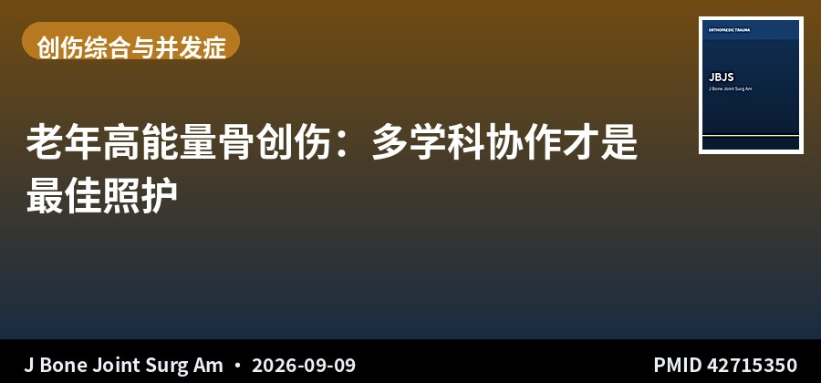
JBJS 述评 · 老年创伤
老年高能量骨创伤：多学科协作才是最佳照护
High-Energy Skeletal Trauma in Older Adults: Best Care When We All Work Together
J Bone Joint Surg Am · 2026-09-09 · HealthPartners / TRIA Orthopedics（美国） · PMID 42715350
一句话结论：JBJS 述评指出，老年高能量骨创伤患者的最佳结局依赖骨科、老年医学、麻醉、康复与社工的协同管理，而非单一专科的救治能力。
要点：文章讨论了老年高能量损伤（区别于低能量脆性骨折）的特殊性：骨质量差、合并症多、生理储备低、康复需求高。强调共管模式（co-management）在围手术期优化、谵妄预防、早期活动与出院规划中的作用。
对临床的启示：对以老年髋部骨折为主的高龄患者群体，这篇文章提供了组织层面的思路：建立骨科–老年医学共管团队、标准化围手术期路径，往往比引进某一项新技术更能改善整体结局。可作为科室质控建设和老年创伤单元论证的参考文献。述评类文章，不含原始数据。
关于本栏目：每日定时检索 Journal of Orthopaedic Trauma、Injury、JBJS (Am)、CORR、Bone & Joint Journal、Journal of Trauma and Acute Care Surgery、OTA International、European Journal of Orthopaedic Surgery & Traumatology、International Orthopaedics、Archives of Orthopaedic and Trauma Surgery 共 10 本创伤骨科核心期刊前一日新收录文献，按部位分类，AI 辅助生成中文精要。
声明：本内容由 AI 辅助整理，仅供学术交流参考，观点与数据请以原文为准，不构成诊疗建议。文献题录与摘要来源：PubMed。
— 创伤骨科文献速览 · 第 001 期 —